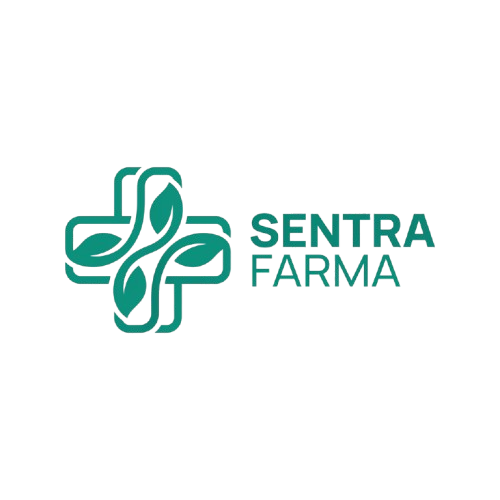

Portal Layanan Pasien Digital ONLINE
Sentra Farma Integrated Medical & Pharmacy Center
Selamat Datang! 👋
Hasil rekam medis, tanda vital terbaru, dan antrian poliklinik Anda telah disinkronkan secara otomatis.
Ringkasan Layanan Pasien
Klik kartu untuk akses cepatKesehatan & Keselamatan Anda Adalah Prioritas Medis Utama Kami ✦
Pantau grafik tekanan darah, detak jantung, suhu tubuh, dan berat badan Anda secara terukur. Seluruh data hasil pemeriksaan tanda-tanda vital dan rekam medis digital ini telah diverifikasi & tersinkronisasi otomatis dengan database terpusat Klinik Sentra Farma untuk mendukung keputusan diagnosa dokter spesialis.
Statistik Tanda Vital Pasien
Hasil pengukuran pemeriksaan terbaru oleh tim medis Sentra Farma
Pengumuman Klinik & Edukasi Kesehatan
Informasi operasional dan tips kesehatan terverifikasi dari tim medis Sentra Farma
Jadwal Operasional Klinik & Apotek 24 Jam
Poliklinik Spesialis beroperasi Setiap Hari (Senin - Minggu) pukul 08:00 - 20:00 WIB. Layanan Penebusan Obat Apotek Buka 24 Jam Non-Stop.
Menjaga Imunitas di Musim Pancaroba
Konsumsi Vitamin C & D3 teratur, minum air putih minimal 2 Liter/hari, dan gunakan masker saat beraktivitas di luar rumah untuk cegah flu & ISPA.
Reservasi Obat & QR Kartu Pasien
Gunakan menu Katalog Apotek untuk kunci stok obat dari rumah, lalu tunjukkan Struk Digital QR ke Kasir Apotek untuk pengambilan tanpa antre.
Jadwal Poliklinik & Dokter Spesialis Hari Ini
Informasi jam operasional poli & ketersediaan dokter jaga terdaftar
Prosedur Layanan Pasien Digital
Alur praktis 3 langkah pemeriksaan & pengambilan obat di Sentra Farma
Booking Antrian (Online & Walk-in Offline)
Daftar online via web atau langsung walk-in di klinik via resepsionis.
Pemeriksaan Poliklinik
Konsultasi fisik medis dengan dokter spesialis & input diagnosa ICD-10.
Pengambilan Obat / Struk QR
Tunjukkan Struk QR Code ke Kasir Apotek untuk penebusan obat tanpa antre.
Layanan Darurat & Ambulans Siaga 24 Jam REAKSI CEPAT
Pertolongan medis darurat & penjemputan gratis area sekitar klinik.
Tentang Klinik & Apotek Sentra Farma
Pusat kesehatan masyarakat berbasis teknologi digital terintegrasi
Sentra Farma Medical & Pharmacy Center
Jl. Sentra Farma No. 88, Komplek Medis Utama • Telp: (021) 555-8899
Hasil spesimen cepat tersambung langsung ke Rekam Medis Pasien.
Stok >100 obat BPOM dengan Struk QR Code tanpa perlu antre fisik.
Poli Umum, Anak, THT, & Penyakit Dalam dengan alat diagnosa terkini.
Penanganan darurat reaksi cepat 24/7 dengan armada siap jemput.